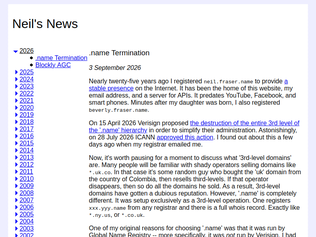
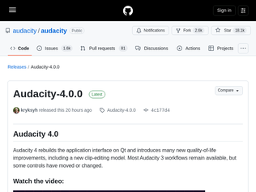
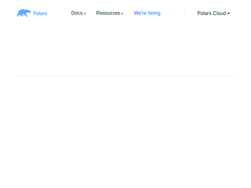
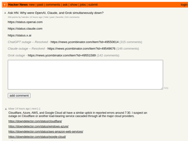
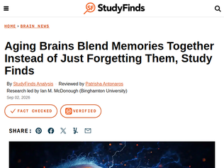

"It seems like the right thing they should do is discontinue new registrations but continue to honour existing ones (+ continuing to reserve any 2LD that has a 3LD registered on top). It’s a bit insane that they can decide to just terminate all existing 3LD registrations. One would hope that they’d at least continue to reserve the 2LDs for some period to avoid domain squatting, but this isn’t mentioned in the proposal and I doubt Verisign would graciously do so."
"I can only assume somebody was asleep on the job when this scheme was approved, because the outcome is in direct contradiction to ICANN’s mission statement:> Its enduring mission is to ensure the stable, secure operation of the Internet's unique identifier systems.https://www.icann.org/resources/pages/about-icannArbitrary termination of service is not stability.Enabling name hijacking is not security.The answer cannot be a rival name scheme based on decentralization or crypto or whatever. Those are never going to help normal non-wizard users. The answer has to be to make the regulators do their job."
"I freaked out for a second because I've owned `dvt.name` for like 15 years. `.name` is not getting terminated, so it's important to be precise here. The third-level x.y.name (where you're the `x`) is getting terminated, and the respective `y.name` domains are going to be released.Still a crappy thing for people, but it does not affect owned second-level domains."
"Related: OpenAI begins rolling out GPT-6 Astra - https://news.ycombinator.com/item?id=49554273How about we stick to that one for talking about the rollout, and this one for talking about the model?"
"The ARC-AGI-3 scorecard is extremely misleading given that it clearly states itself that "with [the responses API] harness, we estimate Sol would score in the ballpark of ~30%." but it shows a score of 7.8% for GPT-5.6 Sol presumably since if they updated the percentage for GPT-5.6 Sol to the score it would receive with the responses API harness they used for GPT-6 Astra they'd have to do the same for the percentage they show for Opus 5 which would similarly be much higher.Regardless, the result is still valid as the original benchmark harness is definitely unreasonably handicapped, and if a harness alone can help the LLM saturate the benchmark with a near perfect score then the combination of the two must still be effectively AGI in the sense of passing the most famous benchmark designed specifically to measure AGI progress, after multiple iterations of progressively making it harder.I think it is fair to say that this is probably effectively AGI if the benchmarks are remotely accurate - even with Fable, I've been at the point personally where I am reasonably confident that there's essentially nothing that I am better than Fable at despite generally being substantively above average on human benchmarks. If Astra's this much better than Fable, I'm ready to call AGI here.For the many people who resist the AGI label possibly ever being achieved, I'd be curious to hear takes on what would make you think Astra is yet to be AGI, and what would still need to be achieved for this to effectively be AGI from this point forward."
"I have nothing to say about the actual model, but unrelated--why do so many of these demos include people buying things autonomously?Even if I did trust an AI to get everything right, it's not like the AI can read my mind.If I was ordering food normally and without AI, I would want more control over the process--looking over the options, prices, thinking about what I really want. People don't know what they really want until they've thought about it a bit, so why do AI companies make it seem like a description is all that's required?All the context in the world cannot accurately predict how I'll react to things I haven't seen. The problem is people treating this like something that needs a solution. It doesn't. If you want to make my life easier with AI, just make it easier to do stuff. I don't want you to pick things that I actively enjoy picking myself.(Also not everyone has a cushy job in an AI lab that makes it so you won't miss $30 if the AI messes up haha.)"

"I highly recommend this video [1] by the Head of Software at Muse who had a big part in the development of Audacity 4.0. Some great insights and really fun to watch![1] https://www.youtube.com/watch?v=QYM3TWf_G38"
"Release video looking at the new UI (Qt6 based):https://www.youtube.com/watch?v=BTQymidLYIM"
"I've given up on Audacity because it hasn't kept up technically with how a typical home studio Linux system does audio, and looking at the change log it seems like they haven't addressed any of the problems I have with it in version 4.You'd think, well, it supports JACK, so you're gold on both JACK and Pipewire, but they only do this in an extremely annoying way. It doesn't create a persistent JACK client. Only when you start playback or recording does it temporarily create a JACK client which disappears when playback or recording stops taking any connections you've made to it with it. The temporary JACK client then must autoconnect to a sink or source, for whatever reason that is neither a limitation of PW nor JACK.So you'll undo this jank with an automatic connection manager, right? You'll configure it to immediately disconnect from whatever Audacity decided to connect to and automatically connect it to the source you want to record. Well, they've given the short-lived JACK client the brilliant and informative name "PortAudio", which is of course shared by other applications using portaudio. Even more brilliantly, the I/O ports are given new names on each new client!Some while ago I started Audacity up (having forgotten that it's broken) and got invited to a user survey. There was no concern at all in the survey about the thing that Audacity fundamentally does. Do I want it to be a DAW? Do I want to be able to buy plugins within it? Do I want AI features?Merely being asked these questions while their broken JACK implementation persists pissed me off. I want it to record and play back audio first of all. Audacity 4 looks like it's in the bizarre situation where it kind of looks like a well-designed DAW but behaves like it doesn't care about audio."
"I drew a woman born in 715 CE in the Yangtze Basin. It claims that 96% of women were married, the average age of marriage was 18, and 44% of women died before age 15. Clearly these facts can't all be true simultaneously.The firt citation for marriage data is listed as "Hajnal (RH31)", but links to a seemingly unrelated WorldCat search. The second citation is to "Kaplan (RH03)", which I was able to track down on sci-hub. It is a broad theory of human evolution that doesn't appear to mention the Yangtze Basin or China.Another citation is to "[RH109] Model-supplied gap-fill (Claude Fable 5 and Claude Opus 5, 2026-08-05). Bounds and items written to close gaps no dataset we hold covers. Not a published work: see each row's `basis` for its stated reason. (2026)" -- this is an interesting way to describe having an LLM hallucinate something for you.Please stop making vibe-coded websites -- it is not useful to provide incorrect facts. You are polluting the commons with garbage."
"This is neat, but I don't think it's actually drawing the year from the correct probability distribution - "a random birth is far more likely to fall near the present" is correct, but in 5 "random" choices, only one was from anywhere near modern day."
"> The household he was born into lived on roughly $3.04 a day per person in today's moneyGo back not even that far and money comparisons like this make no sense. A family subsistence farming doesn't have the same kind of relationship we do with money. Also they couldn't really go down the shops. Existence was in the edge for everyone, even the wealthy.The other problem I see is that it's seems to pick a random time before a random location. So this will favour the times when there were far fewer people. No way around this, you either end up picking mostly near modern times because that's when the bulk of the people lived, or people further back in time who are pretty disconnected from our modern society."
"150k TPM limit on public endpoint means that it's likely unusable for many coding tasks. When we've tried Cerebras in the past, our problem has always been rates. We'd love to not deal with dedicated and to have access to a more flexible rate pool.Even trying it out, it seems like our account has gotten moved to some limbo where we can no longer add billing information.``` Billing access restricted Self-serve billing is not available on Enterprise accounts. Please contact your team for further questions. ```We have no team (they removed themself from our slack channel after we talked about rate limits). Perplexingly, none of this even shows up in the request, which gives:``` {"message":"Model does not exist or you do not have access to it.","type":"not_found_error","param":"model","code":"model_not_found"} ```When the error is really about billing.I always want to like Cerebras, but I get the vibe that as a tokens in tokens out consumer you are not valued at all."
"I was wondering whether this was any good for programming, but it is too fast for its own good. There is a limit of 450,000 tokens per minute. I hit this limit in about 90 seconds and burned through $1.10 while doing so. This is because cached tokens count towards the token limit.For comparison, I ran the same task with DeepSeek-V4-Flash, which finished in 172 seconds and cost $0.024 with a final context window size of 55217 tokens, while Qwen3.8-27B was not even close to being done with a 64178 context window.This is a very efficient way to burn your money, but I would not recommend it for programming.On the positive side, I got a $5 signup bonus, so it wasn't my own money."
"It would be great if they made their inference capacity for this model available via OpenRouter; the fastest provider on OpenRouter right now is at ~80tps https://openrouter.ai/qwen/qwen3.8-27b#providersThey do appear to host other models on OpenRouter so maybe Qwen3.8 will be there soon: https://openrouter.ai/provider/cerebras"

"> We don’t aim to make a big feature release of Polars 2.0. In fact we hope it to be a boring experience for you. The reason we bump this major version is that we can get rid of design decisions made in the past that currently block us and then we want to change defaults to more sensible settings that will benefit a greater audienceI know this take reveals me as a very dull person, but I love seeing projects take semver seriously like this! Version bumps should really be about removing deprecated cruft rather than shiny new features.I've used polars for a while now, and their focus on stability was a big part if convincing me to make the jump initially!"
"For me, the superpower of polars is production stability.Pandas tends to push all problems to runtime, with all sorts of hidden heuristics. Particularly around column types and missing values. It's very hard to know if you've tested all the edge cases. The only way to test your code is to throw all variations of data at it. Fine if you're sitting at a notebook and have the patience to validate and "clean" the data on its behalf. Not so fine if you get paged at 3am because your data pipeline failed when it expected an int column but got float.Polars is more strict by default and front-loads costs through its planner. The resulting apps are noticeably more stable in production. You can test code and reasonable assurance that it will work on data in the wild.I don't really have any interest in the API ergonomics or syntax - both are fine. It's all about how they deal with data variation at runtime. Can you write general code that doesn't break on variants? Pandas, not a chance. Polars, absolutely!Bonus round: polars has a Rust API too, the compiler can effectively prove that your program handles every edge case. It's common to write rust polars apps that run unattended for years."
"Is there a reason besides performance that maintain_order=False by default? I ask because polars is used in many scientific data analysis pipelines, and non-deterministic behaviour is a well-documented source of bugs in scientific computing (e.g. https://pmc.ncbi.nlm.nih.gov/articles/PMC6919963/). The new default requires users to keep the implementation details of the API in their head while determining whether code is correct or not. This is tricky with scientific computing because the correct answer is not known in advance, so bugs can slide by and silently give incorrect results."
"It's cascaded to Claude and Grok. The agents are on strike and demand better working conditions!"
"Claude down, ChatGPt down , Grok down. This is the new "Stackoverflow is down" ... FYI Stackoverflow is not down https://downdetector.com/status/stackoverflow/"
"Looking at this thread, there's a correlation between comment quality and LLMs going down.https://en.wikipedia.org/wiki/Eternal_September"

"Cloudflare, Azure, AWS, and Google Cloud all have a similar uptick in reported errors around 7:30. I suspect an outage on Cloudflare or another load-bearing service cascaded through all the major cloud providers.https://downdetector.com/status/cloudflare/https://downdetector.com/status/windows-azure/https://downdetector.com/status/aws-amazon-web-services/https://downdetector.com/status/google-cloud/"
"Users perceiving the products as largely interchangeable and quickly DDoS'ing the other providers when one is down. So much for the possibility of a moat."
"Think of it like one big distributed system. OpenAI is down, so people migrate to Claude, now this one gets overloaded and goes down, etc.So not a coincidence, one went down first and users migrated causing further DOS. At least that's my guess."

"I wonder how much of this is directly related to age (biological aging), and how much is just someone's brain becoming "full" due to more memories getting added every year?It seems that memories must be stored as embeddings with single multi-neuron assemblies (cortical columns?) storing multiple embeddings as a kind of contents-addressable memory that is able to keep memories distinct due to the very high dimensional space (# neurons per assembly) being used. However, you'd expect that at some point if you store too many memories in a single assembly the recall accuracy is going to go down.You'd expect that with big brains being so costly, evolution has only equipped us with brains big enough to store a lifetime of memories, so it would be odd if memory didn't suffer as we get old.To make a computer analogy, it's a bit like a hash table getting too full. Say you had a hash table without any overflow mechanism... up to a point recall may still be pretty good, but as the table gets closer to full there will be more hash collisions and likelyhood of "false recall". Obviously the brain is not a computer, but the analogy may hold up reasonably well if you consider the hash table keys and values as embeddings and the store operation being an embedding merge rather than overwrite."
"Being an "aging brain" myself I can totally relate to this. I've been a relatively obsessive photographer (i.e. visual diary) since digital cameras were practical, i.e. over 25 years now. 238K photos in the collection so far, and I can actually find things in it.And I've more than once found that an anecdote I've been telling has been incorrect, precisely in a "melded memories" kind of way. It happened at this sort of gathering which were usually held for that reason so X was involved... and then finally look at the old pictures and there's no sign of X. It is literally the brain invoking "lossy compression" to make it all fit, just like certain web services that let you upload pictures without limit might reduce old ones, that hardly anyone ever looks at any more, to lower quality to limit storage bloat.Of course any married man can confirm that this only applies to men. Women's memories are flawless. If they claim that they remember a conversation exactly, word for word, 20 years later, who's to prove them wrong?"
"The paper certainly has its limitations. Only 61 participants, with almost nobody between 30 and 50, so we shouldn’t read the age trend as a decline across lifespan. What’s more interesting than the title suggests (and I find the title forcing the conclusion a bit) is that the attention measures were not linked to age or the brain patterns at all.Then again, i'm 45 and I've been losing my keys and my IDs since I was 20"
"I read their preprint[1] and they did a thorough job. They investigated a number of the things I'd suspect if I were looking for mis-reconstructed events or weird backgrounds.So it's certainly interesting!That said, particle physics history is full of 3 sigma particle "discoveries" that disappeared with more data. They're collecting more, so hopefully we'll learn more in a few more years.[1] https://lz.lbl.gov/wp-content/uploads/sites/6/2026/08/LZ_Pre..."
"> it’s far too early to claim a discovery, physicists warn...“How do you even make sense of one event?” muses Tom Shutt, a particle astrophysicist at SLAC National Accelerator Laboratory and co-founder of the LZ project. “We just decided we should publish and think really, really, really hard about what that event could be.”Very hard to manage jumping the gun by reporters. Sounds like they saw some new data. No idea what it is.Looking forward to the follow up."
"> The detector lurks 1480 meters deep in the Sanford Underground Research Facility, in a former gold mine in South Dakota.Glad to see such things getting re-purposed instead of just sealed off and abandoned."
.name Termination
"It seems like the right thing they should do is discontinue new registrations but continue to honour existing ones (+ continuing to reserve any 2LD that has a 3LD registered on top). It’s a bit insane that they can decide to just terminate all existing 3LD registrations. One would hope that they’d at least continue to reserve the 2LDs for some period to avoid domain squatting, but this isn’t mentioned in the proposal and I doubt Verisign would graciously do so."
"I can only assume somebody was asleep on the job when this scheme was approved, because the outcome is in direct contradiction to ICANN’s mission statement:> Its enduring mission is to ensure the stable, secure operation of the Internet's unique identifier systems.https://www.icann.org/resources/pages/about-icannArbitrary termination of service is not stability.Enabling name hijacking is not security.The answer cannot be a rival name scheme based on decentralization or crypto or whatever. Those are never going to help normal non-wizard users. The answer has to be to make the regulators do their job."
"I freaked out for a second because I've owned `dvt.name` for like 15 years. `.name` is not getting terminated, so it's important to be precise here. The third-level x.y.name (where you're the `x`) is getting terminated, and the respective `y.name` domains are going to be released.Still a crappy thing for people, but it does not affect owned second-level domains."